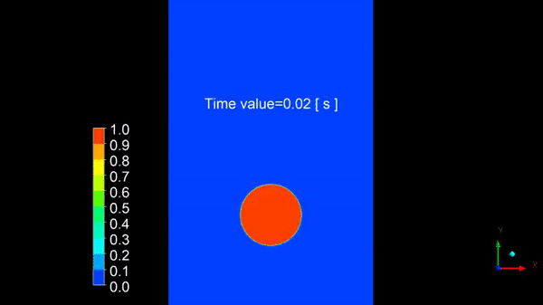
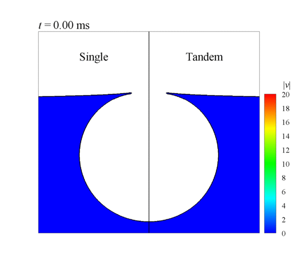
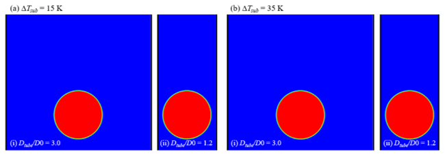
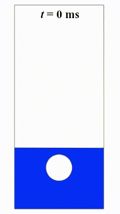
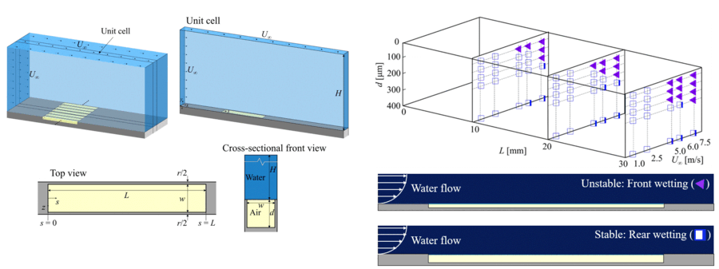
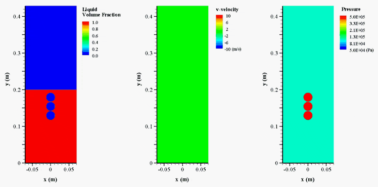

Research
Multi-phase flow
Incompressible Gas-Liquid Two-Phase Flow
Two-phase flows are found in a large number of industrial applications, such as oil wells, airlift pumps, boilers, contractors and reactors in chemical, biochemical and petrochemical industries. It has been known that they can provide several advantages during operation and maintenance such as high heat and mass transfer rates, compactness and low operating maintenance costs. However, the physics of two-phase flow are still not well understood due to complexity, although two-phase flows have been examined in many previous studies.

Bursting Jet in Two Tandem Bubbles
When a bubble reaches close to a gas-liquid interface, a bursting of the bubble produces a high-speed jet and subsequent droplet. This phenomenon is important to decide interaction at the gas-liquid interface, such as transport of biological material, pathogens, and surfactants from the sea surface (Veron 2015), destruction of cells during cultivation in the bioreactor (Boulton-Stone & Blake 1993), and fizziness in a carbonated beverage (Ghabache et al. 2014). Due to its transversal impact across fields, many studies have dedicated to understanding physics behind a bursting of the bubble at the free surface with diverse phase combinations (Spiel 1995; Krishnan et al. 2017; Deike et al. 2018). However, the effect of nearby bubbles on the bursting process has not been studied systematically even though most circumstances of a bubble bursting is observed under the presence of nearby bubbles.

Heat and Mass Transfer between Bubble and Subcooled Flow (Condensation)
Bubble, which nucleates in the subcooled liquid flow due to the heat and mass transfer by the heat source and departs by buoyancy, condenses by the temperature difference between the bubble and the subcooled flow. To effectively control heat, it is important to understand condensation involving heat and mass transfer between bubble and subcooled flow. Therefore, previous studies controlled the initial bubble diameter, system pressure and subcooled temperature to confirm the important parameters on the condensation rate of bubbles and the deformation of the interface (Tian et al. 2010; Pan et al. 2012; Jean et al. 2011; Zeng et al. 2015). However, although it is important to understand the effect of walls on bubble condensation because next-generation heat systems become miniaturized and highly integrated, research on them is insufficient.

Interaction between Oscillating Bubbles and a Free Surface in Confined Domain
The interaction of vapor bubbles with nearby boundaries, such as solid walls, moving phase interfaces, and free surfaces, is a dynamically complex phenomenon with significant practical implications in engineering, science, and technology. The characteristics of bubble oscillations and high-speed liquid jets during these interactions are crucial for studying the dynamics of oscillating bubbles, as the types of liquid jets formed strongly depend on the boundary features. When a bubble interacts with a free surface, several phenomena can occur, including free surface motion and various bubble behaviors such as the formation of a water spike, a water skirt, a toroidal bubble, liquid jets, bubble migration, and bubble bursting.

Plastron Stability and Characteristics in Finite-Length Micro-Trenches
Translating superhydrophobic drag reduction from theoretical infinite models to realistic marine applications requires a rigorous understanding of finite-length effects. This study elucidates the interaction between laminar boundary layers and the plastron (air pocket) within finite longitudinal micro-trenches. We reveal that pressure discontinuities at the trench ends govern distinct wetting mechanisms—specifically, propagating front wetting versus confined rear wetting. Most significantly, our findings establish that substantial slip performance is preserved even under confined rear wetting, offering a new paradigm for optimizing robust, drag-reducing surfaces.

Explosion Bubbles with Phase Changes in a Four-Phase System
The complex interactions between liquid, vapor, and non-condensable gases in these flows lead to dynamic and often hazardous phenomena. In scenarios such as vapor explosions and steam explosions relevant to nuclear-reactor safety, molten materials may come into contact with water, causing rapid vaporization and the formation of bubbles that contain either pure vapor or a mixture vapor and non-condensable gases. The subsequent growth and collapse of these bubbles, particularly near a free surface, can generate powerful pressure waves and lead to severe structural damage (He et al., 2023). In this study, we numerically investigate compressible four-phase flow dynamics induced by underwater bubble explosions near a free surface. To address the associated modeling challenges, we have developed a numerical scheme for compressible four-phase flows consisting of liquid, vapor, and two non-condensable gas phases. The accompanying figure illustrates a representative underwater bubble explosion phenomena near a free surface and the resulting multiphase evolution and pressure-wave emission.

[Figure 6]
Numerical simulation of a compressible four-phase flow induced by an underwater bubble explosion
near a free surface (
=0.25,
=0.25,
vapor
=0.5)